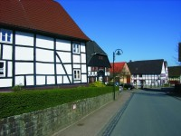
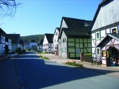
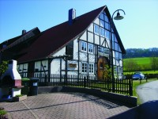

Willkommen in Reileifzen – mitten im Weserbergland
Herzlich willkommen auf der Website unseres schönen Dorfes Reileifzen!
Zwischen Holzminden und Bodenwerder, direkt an Deutschlands beliebtestem Radwanderweg entlang der Weser gelegen, erwartet Sie eine lebendige Dorfgemeinschaft mit Herz und Geschichte.
Bei uns findet man nicht nur Ruhe und Natur, sondern auch gelebten Zusammenhalt: Vom Verkehrsverein über das Dorfgemeinschaftshaus „Gänsetränke“ bis hin zur Feuerwehr – hier packen alle mit an, um Reileifzen zu einem Ort zu machen, in dem man sich einfach wohlfühlt.
Ob Sie uns auf Ihrer Radtour besuchen, Verwandte und Freunde treffen oder einfach neugierig auf unser Dorf sind – wir freuen uns, dass Sie da sind und wünschen viel Spaß beim Entdecken!